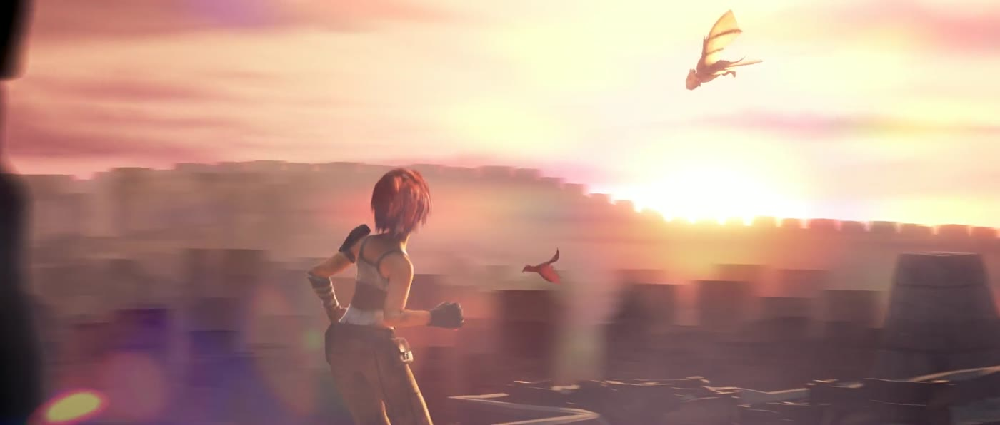

ВАШ ВЕЧЕР В ХОРОШЕЙ КОМПАНИИ
Что посмотрим?
ВЫБОР КИНОТЕКИ
Синтел
Большое путешествие начинается
с маленькой дружбы.

Продолжить просмотр
С чего начать
Короткие истории и полнометражное кино
Серия за серией
Классика телевидения и любимые персонажи
Больше, чем одна коллекция
Ищите в нескольких каталогах и открывайте видео
из RUTUBE, VK Видео, YouTube, Vimeo и PeerTube.
ПОИСК ПО ИСТОЧНИКАМ
Весь каталог
Пока ничего не нашлось
Попробуйте оригинальное название или измените фильтры.
Internet Archive и Wikimedia Commons ищут открытые записи. Остальные источники показывают публикации площадок: название и длительность не гарантируют, что это полный фильм. Ограничения доступа и качество определяет источник.